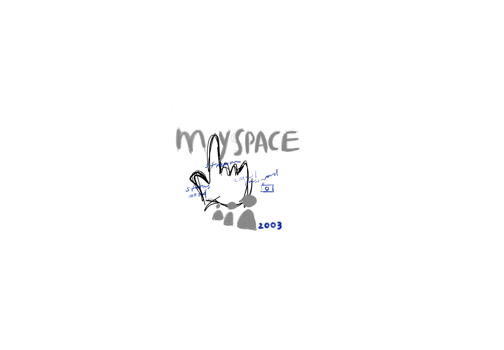
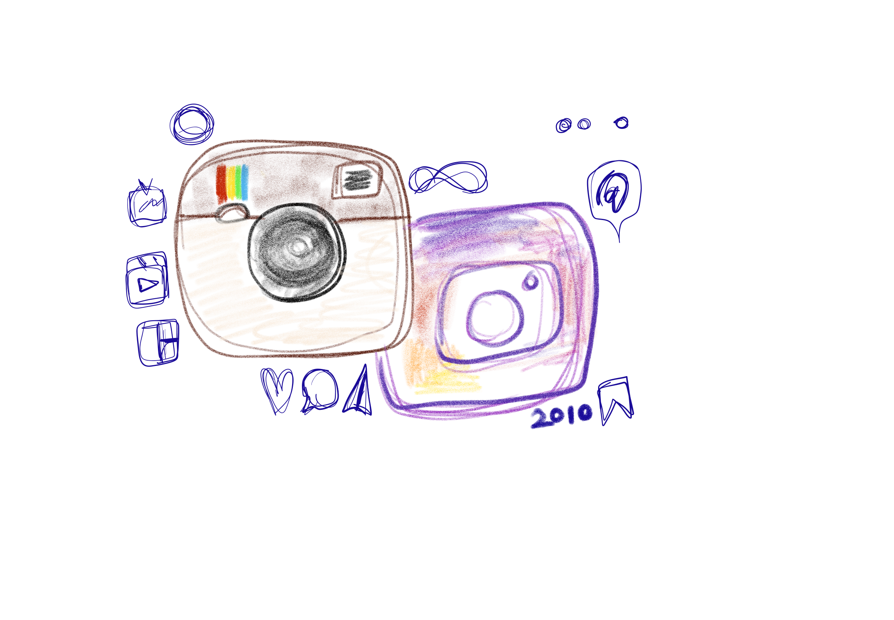

social media presense has changed and revolutionized over the years. this page expresses art to depict the changes and transformations from 1997 to 2010 while revealing social media harms. what are the cracks and downfalls of social media and technological advancements?


